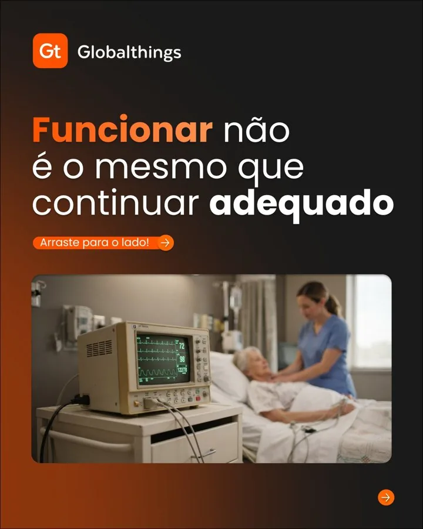
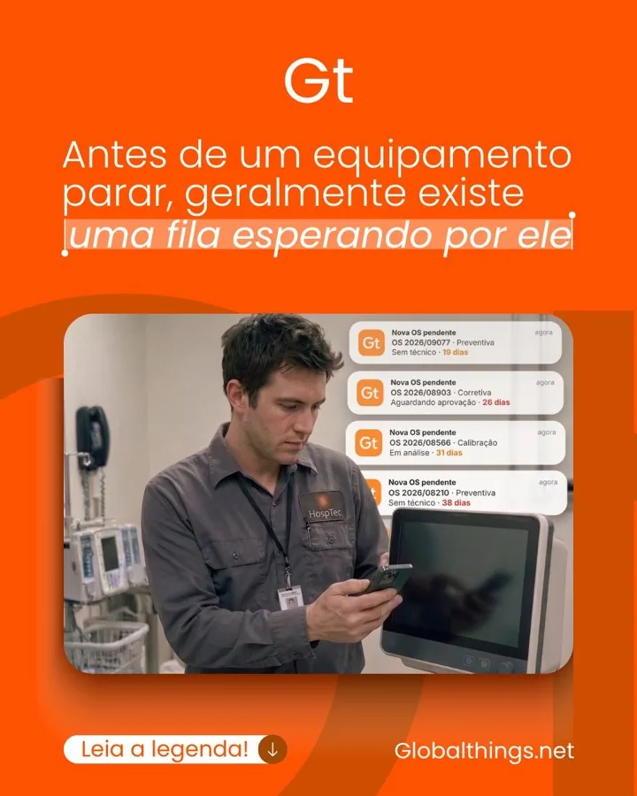

Posicionamento e estratégia
Para marcas que precisam definir o que dizer antes de publicar.
- Diagnóstico da comunicação atual
- Posicionamento e mensagem
- Plano de comunicação
Estratégia de conteúdo para pequenas empresas: da mensagem à rotina de publicação, com métricas que mostram o que funciona.
Conversa direta pelo WhatsApp, sem formulário.
Posicionamento e mensagem em uma frase: quem você atende, o que resolve e por que isso importa para essa pessoa.
Um calendário e uma produção em lote que cabem na sua semana, com processo claro para cada etapa.
Pilares de conteúdo e formatos prontos, para criar sem começar do zero toda semana.
Objetivo, público e canais definidos, com um próximo passo claro para cada conteúdo.
Acompanhamos poucas métricas que importam e ajustamos o conteúdo com base no que as pessoas respondem.
Se alguma dessas é a sua, a gente começa por ela.
Me conta qual é a suaAntes de criar, definimos o que a sua empresa diz, para quem e por que isso importa. É a base de todo o resto.
Com a mensagem definida, organizamos os assuntos e os formatos. Você sempre sabe o tema do próximo post e como ele é feito.
Um calendário e uma produção em lote que cabem na sua semana. A constância vem de um processo bem desenhado.
Olhamos poucas métricas, as que mostram se as pessoas respondem, e ajustamos o conteúdo com base nelas.
Quer saber por onde começar na sua marca?
Começar pela clareza

Identidade visual e conteúdo de autoridade para uma empresa B2B de saúde e tecnologia.
Direção visual e plano de conteúdo para uma loja de moda feminina.
Me conta o que está travando e a gente começa pela clareza.
Para marcas que precisam definir o que dizer antes de publicar.
Para quem precisa de assunto, formato e roteiro definidos para cada semana.
Para quem quer a comunicação funcionando sem que ela vire mais uma tarefa.
Não sabe qual escolher? Me conta o seu momento e eu indico o melhor ponto de partida.
Falar do meu momentoPropostas sob medida, de acordo com o escopo e o porte da empresa.
Comunicar bem começa por saber o que dizer.
Sou a Mírian, estrategista de marca e social media. Trabalho com pequenas empresas, lojas e marcas, com experiência em saúde e tecnologia, setores em que clareza e confiança pesam na decisão de quem compra.
Também sou fotógrafa, e cuido do conteúdo do roteiro à arte final. Meu jeito de trabalhar é acolhedor, estratégico e objetivo: você sempre sabe o que vem a seguir.
Sou estrategista de marca e social media. Ajudo pequenas empresas, lojas e marcas a se comunicarem com direção: definimos a mensagem, organizamos o conteúdo e montamos uma rotina que cabe na semana.
Para pequenas empresas, lojas, marcas e prestadores de serviço que sabem que precisam comunicar, mas não sabem o que postar nem por onde começar. Tenho experiência em saúde e tecnologia, setores em que clareza e confiança pesam na decisão de quem compra.
São quatro etapas, nesta ordem. Clareza: definimos o que a empresa diz, para quem e por que isso importa. Criação: organizamos os assuntos e os formatos. Rotina: montamos um calendário e uma produção em lote que cabem na semana. Resultado: acompanhamos poucas métricas e ajustamos o conteúdo com base nelas.
Três formas de trabalhar: posicionamento e estratégia (diagnóstico, posicionamento, mensagem e plano de comunicação), linha editorial e conteúdo (pilares, formatos, modelos de carrossel, roteiros e pautas) e gestão de conteúdo (calendário, produção em lote, métricas e relatório mensal).
As propostas são sob medida, de acordo com o escopo e o porte da empresa. A conversa inicial é pelo WhatsApp, para entender a sua marca e indicar o melhor ponto de partida.
Na Globalthings, empresa de tecnologia para a saúde, o perfil do Instagram foi de 270 para 5.564 seguidores, com identidade visual consistente e conteúdo de autoridade. Na Duda Store, loja de moda feminina, desenvolvi a direção visual e o plano de conteúdo do Instagram.
Chame a Mírian pelo WhatsApp e conte o que está travando na comunicação da sua marca. Não há formulário.
Uma conversa inicial pelo WhatsApp para entender a sua marca e indicar o melhor ponto de partida.